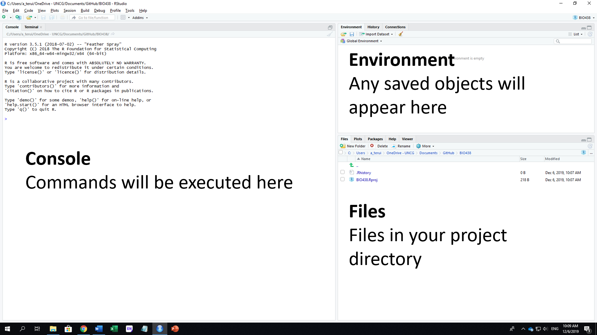
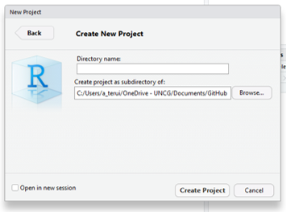
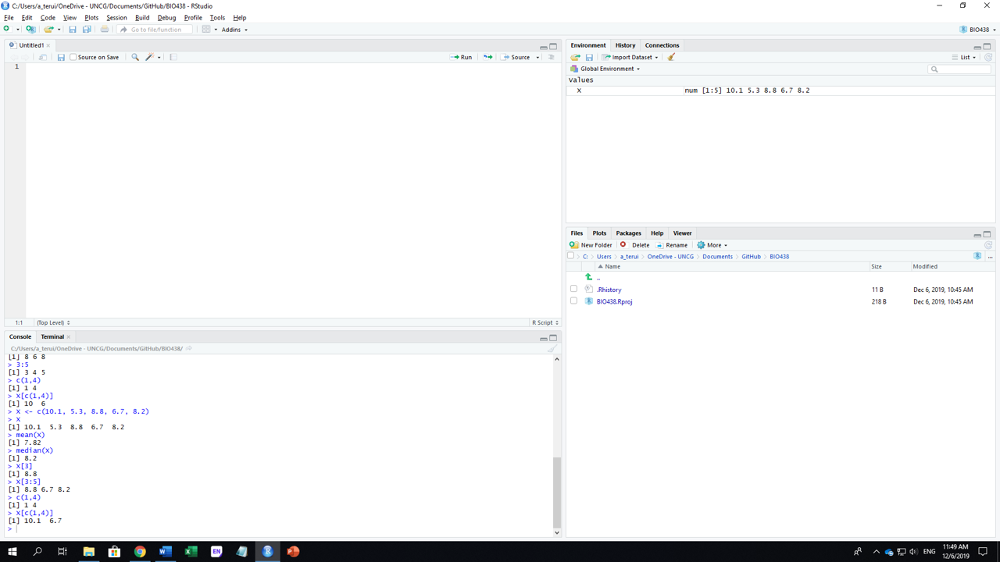
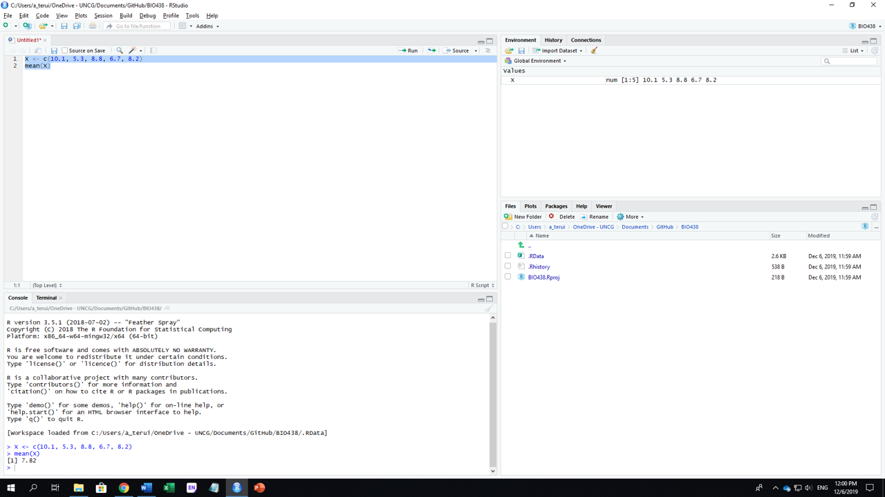
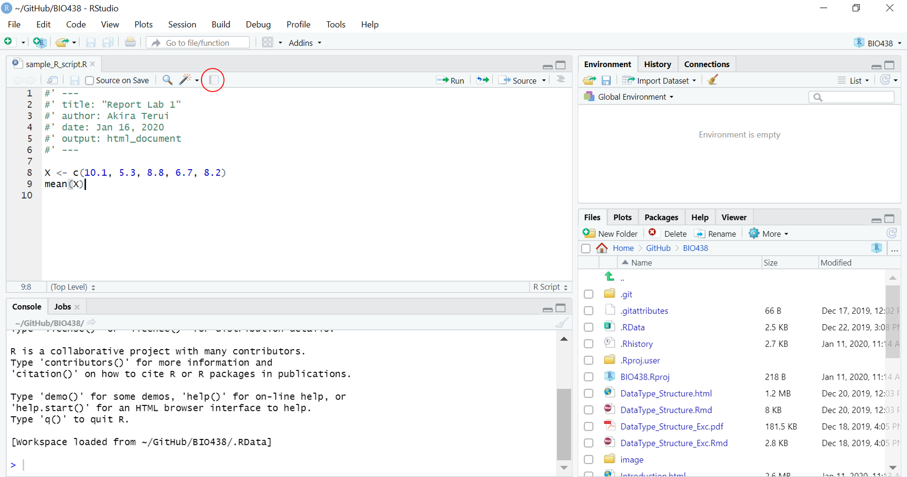
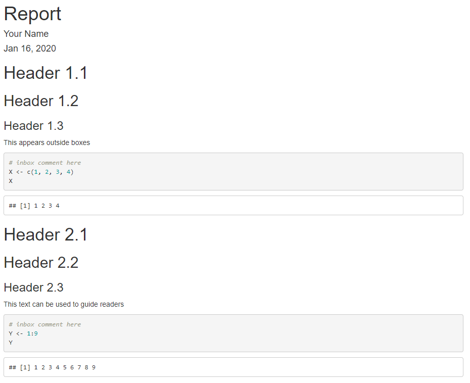

Chapter 2 R Studio Project
2.1 Install R and R Studio
R and R Studio can be installed from the following websites:
While R is stand-alone software, I strongly recommend to use it with R Studio. R Studio has many functions that help your data analysis.
2.2 Basic Setup
2.2.1 Interface
R Studio interface. The left half of the screen is “console” where you put your script to execute calculation/data manipulation/analysis (ignore the tab “Terminal” at this point). The right bottom shows a folder in which you are working now – i.e., “working folder or directory”. R does not recognize any files outside of this folder, so be sure to pick the right directory when you work in R.

2.2.2 Create Project
As you proceed, numerous materials will be generated. How do we manage files? No worries, R Studio will help organize files by creating a project. To initiate the process of creating a project:
- go to
File > New Projecton the top menu - select
New Directory - select
New Project
A new window pops up and prompts you to name a directory and where to put the directory in your computer. Click Browse to select a location for the directory. I would create a folder for R projects (e.g., RProject) and save project directories under this folder. Click Create Project once you decided directory name and location:

2.2.3 Find Where You Are
Once you created a project, R Studio will take you to where the R project is located. Check the current directory using the following script:
getwd()## [1] "C:/Users/Akira/OneDrive - UNCG/Documents/github/biostats"However, when you next open R Studio, the initial location could be somewhere else. In that case, go to File > Open Project and open the .Rproj file that you just created. This will take you to the directory you are supposed to be.
2.3 Object
2.3.1 Create Object
Let’s play with R. Put the following script in your console.
x <- c(10.1, 5.3, 8.8, 6.7, 8.2)This script creates a vector of numbers composed of {10.1, 5.3, 8.8, 6.7, 8.2}. x is a ‘box’ where the vector information is stored, and ‘<-’ is the arrow that commands R to store {10.1, 5.3, 8.8, 6.7, 8.2} in a box x. x is referred to as an object. Let’s see what’s in x:
x## [1] 10.1 5.3 8.8 6.7 8.2R has many functions that calculate the mean, median, etc. Let’s calculate a mean and median for x:
mean(x)## [1] 7.82median(x)## [1] 8.2Also, you can pick an element(s) as you wish. Numbers in brackets [] specifies the numbered ID of each element. In the above example, element x[3] is 8.8. You can extract this information with the following script:
x[3]## [1] 8.8You can also choose multiple elements simultaneously. For example, 3:5 specifies elements starting from 3 to 5 (colon creates a sequence of numbers):
3:5## [1] 3 4 5x[3:5]## [1] 8.8 6.7 8.2If you want to pick elements that are not ordered sequentially, you can use c() to specify multiple elements:
c(1,4)## [1] 1 4x[c(1,4)]## [1] 10.1 6.72.3.2 Case Sensitive
Importantly, objects are case sensitive. Let’s see what happens when you create an object x (lower case):
# create an object `x` (lower case)
x <- 3
# check what's in object `x` (lower)
print(x) ## [1] 3There is a number saved in the object x. Try X (upper case):
print(X)## Error in print(X): object 'X' not foundThis returns a message Error: object 'X' not found. This is because R distinguishes lower and upper cases. To see the difference, create the object X:
# create an object `x` (upper case)
X <- 5
# check what's in object `X` (upper)
print(X) ## [1] 5# check what's in object `x` (lower)
print(x) ## [1] 3Thus, lower x and upper X can save different information.
2.4 Arithmetic Operations
2.4.1 Number
Addition
1 + 1## [1] 2121 + 123## [1] 244Subtraction
1 - 1 ## [1] 0121 - 123## [1] -2Multiplication
1 * 1## [1] 1121 * 123## [1] 14883Division
1 / 1## [1] 1121 / 123## [1] 0.9837398Power
2^2## [1] 4Square root
sqrt(4)## [1] 24^(1/2)## [1] 22.4.2 Object
R can handle arithmetic operations between objects. Prepare objects x and y:
x <- 1:5
y <- 2:6
print(x)## [1] 1 2 3 4 5print(y)## [1] 2 3 4 5 6You can use objects instead of directly entering numbers. R automatically performs arithmetic operations for each element. For example, enter y-x:
y - x## [1] 1 1 1 1 1This is equivalent to:
\[ y[1] - x[1]\\ y[2] - y[2]\\ ...\\ y[n] - x[n] \]
You can save the results as another object:
z <- y - x
print(z)## [1] 1 1 1 1 1
2.5 R Script
In R Studio, we rarely write scripts directly in R console. This is because console does NOT save your scripts, so it is difficult to keep records of data manipulation and analysis. Instead, we write our scripts in an R script, which enables you save and organize scripts in a separate window and allows you to run scripts when you are ready.
2.5.1 Create R Script
To create an R script:
- go to
File > New File > R Script(orCtrl + Shift + N) - then, you will see a new window of R script in the left top

2.5.2 Run R Script
You can run your script from the R script window. Write the following scripts:
x <- c(10.1, 5.3, 8.8, 6.7, 8.2)
mean(x)Once you write scripts in the R Script window, the tab text will turn into red. This means this R Script file is edited but unsaved. You can save the file by Ctrl + s or by clicking the floppy disk icon on the top bar. Writing these scripts in the R script window does not execute any calculation. To execute, select lines and Ctrl + Enter. Selected scripts will appear in the console and execute what you commanded:

2.6 Compile Report
R Studio has a function to compile a report from R scripts (see also R Markdown: The Definitive Guide for details). Include the following script on the top of the R script file to put your information:
#' ---
#' title: "Report"
#' author: Your Name
#' date: Jan 16, 2020
#' output: html_document
#' ---Each argument determines the following:
titletitle of your reportauthorthis appears below the title in the compiled reportdatedate createdoutputoutput format; usehtml_document
Click on the “compile” button on the top. This creates a report from your R script:

The R Studio will start compiling your report. Here is some rules when compiling a report.
- Your script will appear in a grey box. Put
#if you want leave a comment on the script. - Output from your script will appear in a white box with double sharps
- Text after
#'will show up outside a grey box (text after#will be regarded as Header)
For example, the following script is compiled like this:
#' ---
#' title: "Report"
#' author: Your Name
#' date: Jan 16, 2020
#' output: html_document
#' ---
#' # Header 1.1
#' ## Header 1.2
#' ### Header 1.3
#' This appears outside boxes
# inbox comment here
x <- c(1, 2, 3, 4)
x
#' # Header 2.1
#' ## Header 2.2
#' ### Header 2.3
#' This text can be used to guide readers
# inbox comment here
y <- 1:9
y
2.7 File Management
As you proceed, the number of files will increase. It is critical to learn basic rules of how to locate and name your files in your computer. Here are some recommendations:
- Put all the relevant files in a single folder.
- R scripts and associated files should be saved in the project folder.
- Create a new R project when working on different topics. Do not mix them up in a single folder.
- Avoid space and period when naming files. Instead, use underscore or hyphen.
- Do:
script_week1.Rscript-week1.R - Don’t:
script week1.R
- Do:
- Use lowercase.
- Do:
script_week1.R - Don’t:
Script_week1.R
- Do:
- Keep consistent.
- For example, if your R script deals with figures, then name it
figure_XXX.R(XXXidentifies further details).
- For example, if your R script deals with figures, then name it
- Numbering will help keep your folder/directory organized.
figure_temperature.R,figure_precipitation.R…this will work, but the order of files may be confusing.figure01_temperature.R,figure02_precipitation.R…this will order files by group (figure) and then numerically.